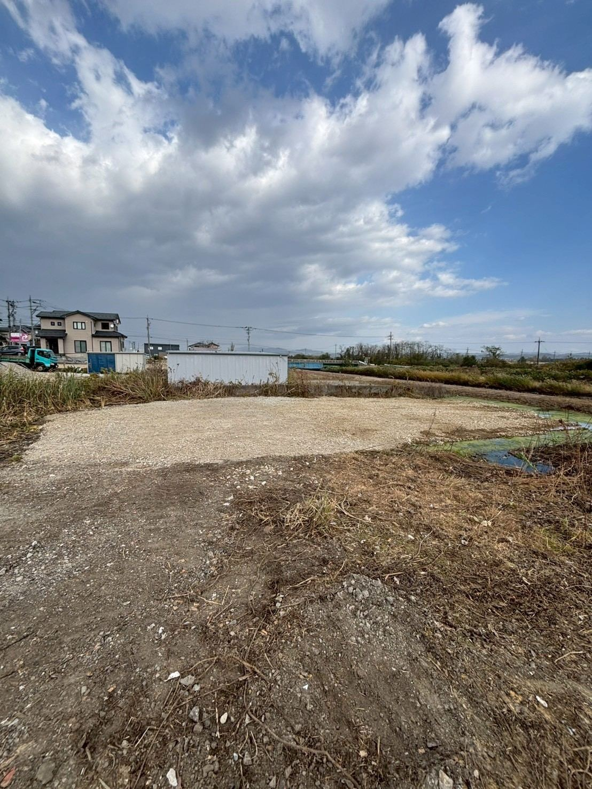

「実家が空き家のまま」「相続したけれど管理できない」——
岩国市・周辺エリアの空き家解体を補助金活用・アスベスト調査込みでサポートします。
現地調査・お見積もりは無料です。

空き家は放置しているだけで、屋根や外壁の劣化、雨漏り、シロアリ被害が進みます。 倒壊のおそれがあると自治体から「特定空家等」に指定されると、固定資産税の住宅用地特例が 解除され税負担が増えるケースもあります。管理の手間や近隣への影響を考えると、 早めに解体して更地にする、または活用方法を決めることが結果的に負担を減らします。
義翔工業は岩国市を拠点に、和木町・柳井市・周南市・下松市・光市など周辺エリアの 空き家解体を数多く手がけてきました。木造2階建ての戸建てはもちろん、 アパート・倉庫・蔵など、建物の種類を問わずご相談いただけます。
遠方にお住まいでも、写真とお電話でのご相談から進められます。
岩国市の空き家解体補助金制度の対象確認から申請サポートまで対応します。
着工前の事前調査に対応。含有が確認された場合も法令に基づき適切に処理します。
売却・駐車場化・戸建て建築など、解体後の活用方法もあわせてご提案します。
空き家は長年放置されていることが多く、通常の解体に加えて次のような要因で費用が変わります。 詳しい金額の目安は解体費用の目安ページをご覧ください。
床面積80㎡以上の建物を解体する場合は、建設リサイクル法に基づき工事着手7日前までに 都道府県への届出が必要です。あわせて、2022年4月からは着工前のアスベスト含有建材の 事前調査が法令で義務化されています。空き家は建築時期が古いことが多く、この調査が 特に重要になります。
義翔工業では、これらの届出・調査・分別解体・廃棄物処理までワンストップで対応します。 持ち主の方が遠方にお住まいの場合も、書類のやり取りは郵送・メールで完結できます。
対応エリア: 岩国市・柳井市・周南市・下松市・光市・和木町（山口県東部エリア）
FREE CONSULTATION
費用・補助金・アスベスト調査まで、どんなことでもお答えします。相談・お見積もりは無料です。